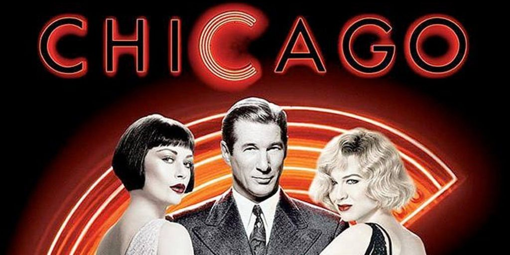

- Chicago
- Moulin Rouge!
- The Rocky Horror Picture Show
Chicago
Chicago is a 2002 American musical black comedy crime film based on the 1975 stage musical of the same name. It explores the themes of celebrity, scandal, and corruption in Chicago during the Jazz Age. The film stars Renée
Zellweger, Catherine Zeta-Jones, and Richard Gere. Chicago centers on Roxie Hart (Zellweger) and Velma Kelly (Zeta-Jones) two murderesses who find themselves in jail together awaiting trial in 1920s Chicago. Roxie, a housewife, and Velma, a
vaudevillian, fight for the fame that will keep them from the gallows. 
The film marks the theatrical directorial debut of Rob Marshall, who also choreographed the film, and was adapted by screenwriter Bill Condon, with music by John Kander and lyrics by Fred Ebb. Critically lauded, Chicago won six Academy Awards in
2003, including Best Picture, the first musical to win Best Picture since Oliver! in 1968.